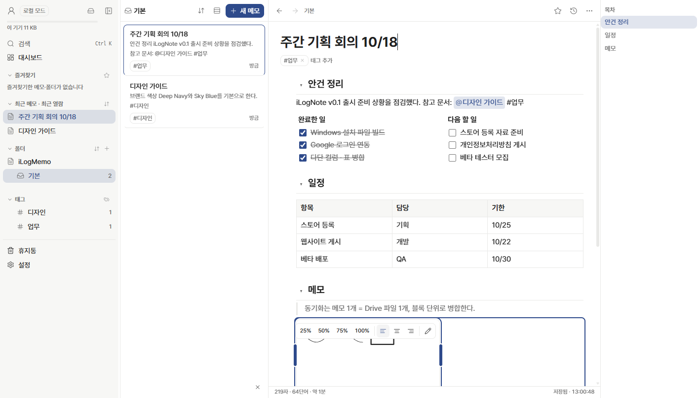
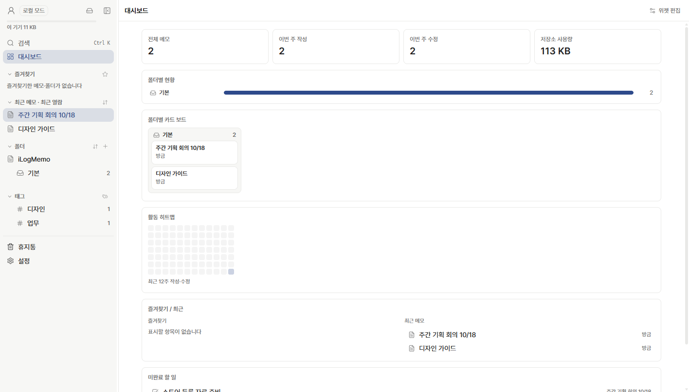
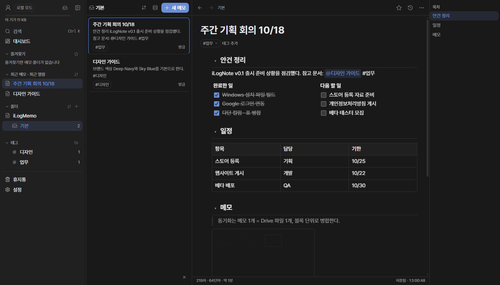
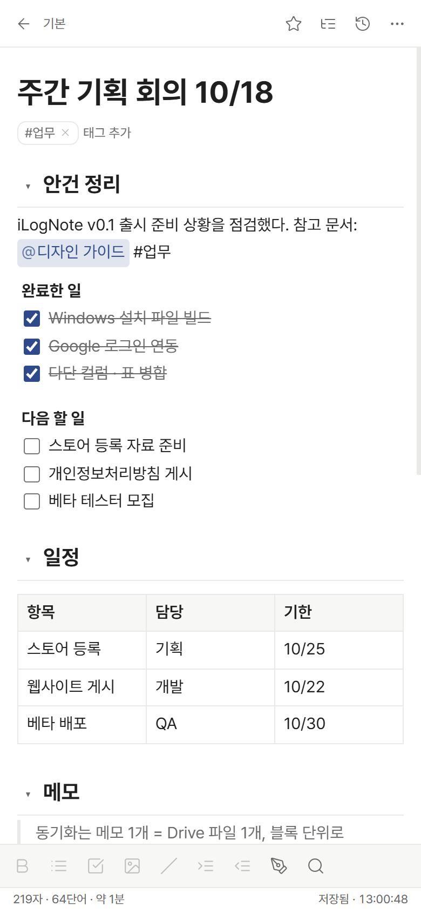

새 소식 v0.0.2
Markdown 모드 (Obsidian처럼)
메모 오른쪽 위 기본 | MD 전환. 줄 단위로 보기 좋게 그려지고, 커서가 있는 줄만 Markdown 표기가 드러나 그대로 고칠 수 있습니다. 메모마다 모드를 기억하고, 두 모드를 오가도 내용은 그대로입니다.
구역 · 글 묶음 복사
구역 제목 오른쪽, 이어진 글 묶음 오른쪽의 복사 버튼 한 번으로 그 부분만 복사. 휴대폰은 오른쪽에서 왼쪽으로 밀면 복사됩니다. 다른 앱에 붙여 넣어도 보이는 그대로 한 줄씩.
메모에 묻기 (기기 안 AI)
"예산은 어디에 적었지?", "이번 달 메모 몇 개야?"처럼 채팅으로 물어보면 찾아 답하고, 위치를 알려 주고, 개수를 셉니다. 서버 통신 없이 기기 안에서만 — 지원 기기는 기기 · 브라우저 내장 모델(Gemini Nano 등)로 더 똑똑하게.
여러 Google 계정
계정마다 최상위 루트 하나 — 개인 · 회사 메모를 나눠 쓰고, 계정 사이로 메모 · 폴더를 옮기거나 복사(히스토리 포함). 루트마다 Drive 사용량을 얇은 막대로 표시합니다.
버전 히스토리 나란히 비교
이전 버전과 현재 버전을 한 화면에 나란히, 바뀐 문단은 색으로 표시. 제목이 바뀐 것도 보이고, 내용이 같은 버전은 쌓이지 않습니다.
더 편한 휴대폰 화면
떠 있는 AI 버튼(끌어서 옮기기), 구역 이동 버튼(이전 · 다음 · 목록), 어두운 테마에서 잘 보이는 커서, 다른 앱 붙여넣기 줄바꿈 정리.
주요 기능
블록 에디터
/ 명령, 구역(목차), 표 · 셀 병합, 다단 컬럼, 코드, 체크리스트, 이미지, 펜 드로잉.
Markdown 모드
줄 단위 라이브 미리보기 — 제목 · 목록 · 할 일 체크 · 굵게 · 링크 · 인용 · 구역(§)을 그대로 Markdown으로.
@ 메모 링크 · 백링크
메모끼리 연결하고, 어디서 왔는지 · 누가 참조하는지 한눈에.
로컬 우선
인터넷 없이도 모든 기능이 동작하고, 연결되면 자동으로 동기화합니다.
본인 Google Drive 동기화
메모 · 설정은 내 Drive의 iLogNoteApp_NoDelete 폴더에만 저장됩니다. 여러 기기 · 여러 계정에서 이어서 작성하세요.
버전 히스토리
바뀐 부분만 기록해 용량은 작게, 언제든 이전 버전으로 복원 · 새 메모로 복사.
메모에 묻기
찾아 답하기 · 위치 알려주기 · 집계. 질문과 메모는 기기 밖으로 나가지 않습니다.
표준 포맷으로 탈출
Markdown · HTML · JSON 백업으로 언제든 전부 내보낼 수 있습니다.
화면




다운로드
Windows
Windows 10 · 11 (64비트) · v0.0.2 · 90MB
설치 파일 받기 (.exe)SHA-256 a0b36fd1102dedf72e2d9324db951e607f53bebbd3769f5dcf36ec143658ee43
Android
Google Play
출시 예정iPhone · iPad
App Store
출시 예정Windows 설치 시 "Windows의 PC 보호" 창이 뜨면 추가 정보 › 실행을 누르세요(코드 서명 인증서 적용 전 안내). 이전 버전을 쓰고 있다면 새 설치 파일로 덮어 설치하면 메모는 그대로 유지됩니다.
Google 데이터 사용 요약
English
iLogNote is a personal note app developed by ZenithOne. Write in blocks like Notion, or switch any note to an Obsidian-style Markdown mode with line-by-line live preview. Copy a whole section or a paragraph block with one tap (or a swipe on mobile), ask questions about your notes with an on-device assistant, and keep separate roots for multiple Google accounts. Notes are stored only on your device and, if you sign in, in an iLogNoteApp_NoDelete folder in your own Google Drive. There is no operator server: we never collect, store or see your notes. When you sign in with Google, the app requests your basic profile (name, email, photo) and the drive.file scope, which only gives access to files the app itself creates. See our Privacy Policy and Terms of Service.